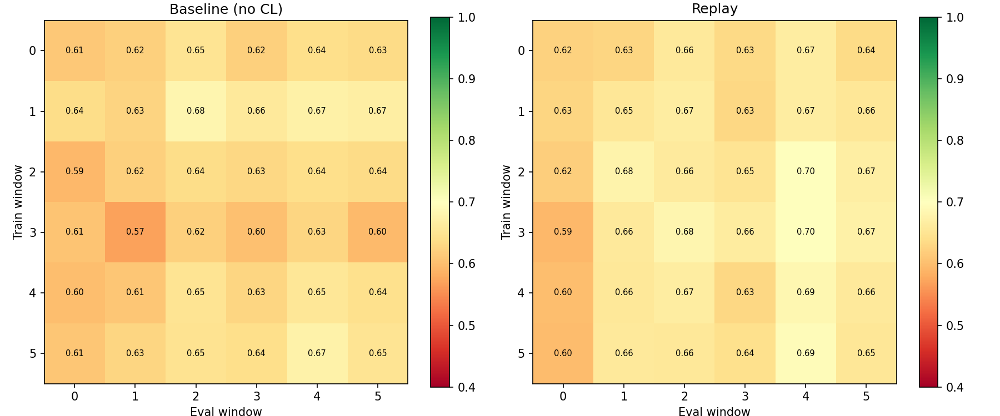

Wyniki prototypu
Graf transakcji + Continual Learning — co udało się osiągnąć?
Franciszek Job · Jakub Ciszewski
AGH · Semestr 8 · 2026-05-17
Co zbudowaliśmy
flowchart LR
A[IEEE-CIS\nDataset] --> B[Chunked\nLoader]
B --> C[6 okien\nczasowych]
C --> D[Graf\ntransakcji]
D --> E[OCGNN]
E --> F[Replay\nBuffer]
F --> E
E --> G[AUC\nBWT / FWT]
style E fill:#ffe4b5,stroke:#cc7700
style F fill:#ffe4b5,stroke:#cc7700
- Węzły grafu: transakcje z cechami
V1–V200, C1–C14, D1–D15
- Krawędzie: wspólna karta (
card1/2) lub domena email
- Model: OCGNNo co — wykrywanie anomalii bez etykiet
- Continual learning: Replay buffer — próbki z przeszłości dokładane do treningu
Wyzwania, które musieliśmy rozwiązać
-
RAM: DOMINANT nie skaluje się — rekonstruuje pełną macierz O(n²),
przy 50k węzłów potrzeba ~10 GB tylko na macierz → zamieniony na OCGNN (O(n))
-
RAM: dataset nie mieści się w pamięci → chunked loading (3 przebiegi po pliku),
wczytujemy tylko potrzebne kolumny (
usecols, float32),
zatrzymujemy się gdy okna są pełne
-
Eksplozja krawędzi grafu — przy 500 transakcjach na encję C(500,2)=125k krawędzi
per grupę → ograniczono do 50 transakcji na encję
Wyniki: Baseline vs Replay
| Metryka |
Baseline (bez CL) |
Replay |
Różnica |
| Avg ROC-AUC |
0.6306 |
0.6566 |
+2.6% |
| Forgetting ↓ |
-0.0136 |
0.0073 |
porównywalnie |
| BWT ↑ |
0.0136 |
-0.0073 |
Baseline lepszy |
| FWT ↑ |
0.1406 |
0.1611 |
+14.6% |
Parametry: V1–V200 · buffer=5000 · replay_ratio=0.3 · epochs=50 · hidden_channels=128
Macierze AUC

Wiersz = okno treningowe · Kolumna = okno ewaluacyjne · Przekątna = wynik na bieżącym oknie
Co oznaczają te wyniki?
Replay wygrywa na AUC (+2.6%) — model z continual learningiem jest po prostu
lepszym detektorem fraudów. Bufor z historycznymi próbkami pozwala mu uczyć się
bardziej ogólnych wzorców.
Forward Transfer +14.6% — to kluczowy wynik. Wzorce fraudów z wcześniejszych
okien czasowych realnie pomagają wykrywać fraudy w przyszłości. CL nie tylko "nie szkodzi" — aktywnie poprawia
detekcję.
Forgetting minimalny (0.0073) — Replay prawie nie zapomina starych wzorców.
Oba modele są stabilne, co sugeruje że wzorce fraudów w datasecie są względnie spójne w czasie.
Wpływ doboru parametrów
Pierwsze uruchomienie (domyślne parametry) vs. po tuningu:
|
Domyślne |
Po tuningu |
| Replay AUC |
0.6205 |
0.6566 |
| Baseline AUC |
0.6468 |
0.6306 |
| Replay FWT |
0.1151 |
0.1611 |
| Kto wygrywa? |
Baseline |
Replay |
Kluczowe zmiany: V1–V39 → V1–V200 · buffer 800 → 5000 · replay_ratio 0.15 →
0.3
Wnioski
- Hipoteza potwierdzona — Replay z odpowiednimi parametrami bije baseline zarówno na AUC
jak i FWT
- Cechy mają znaczenie — zwiększenie zakresu cech V z 39 do 200 miało największy wpływ na
jakość
- Skalowalność rozwiązana — chunked loading + OCGNN pozwalają działać w ramach 12 GB RAM
- Dalsze możliwości: EWC, optymalna selekcja krawędzi grafu, więcej strategii replay